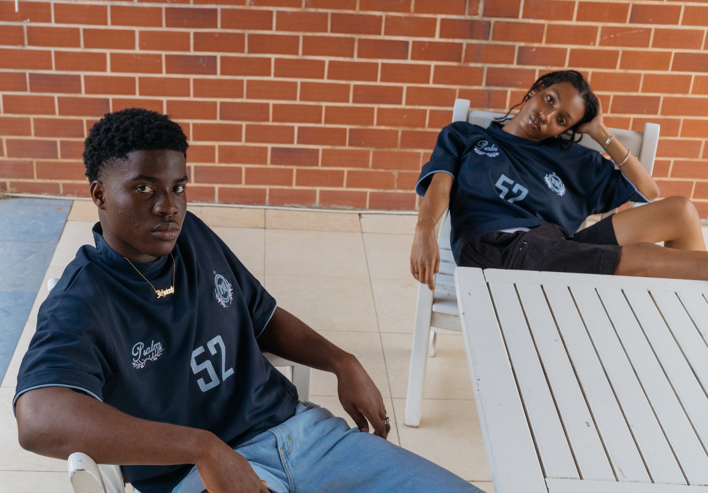
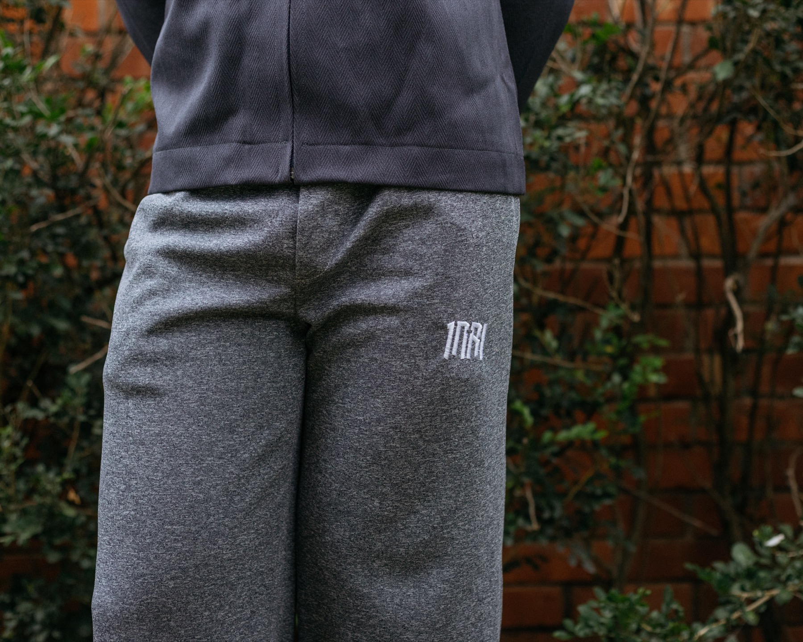
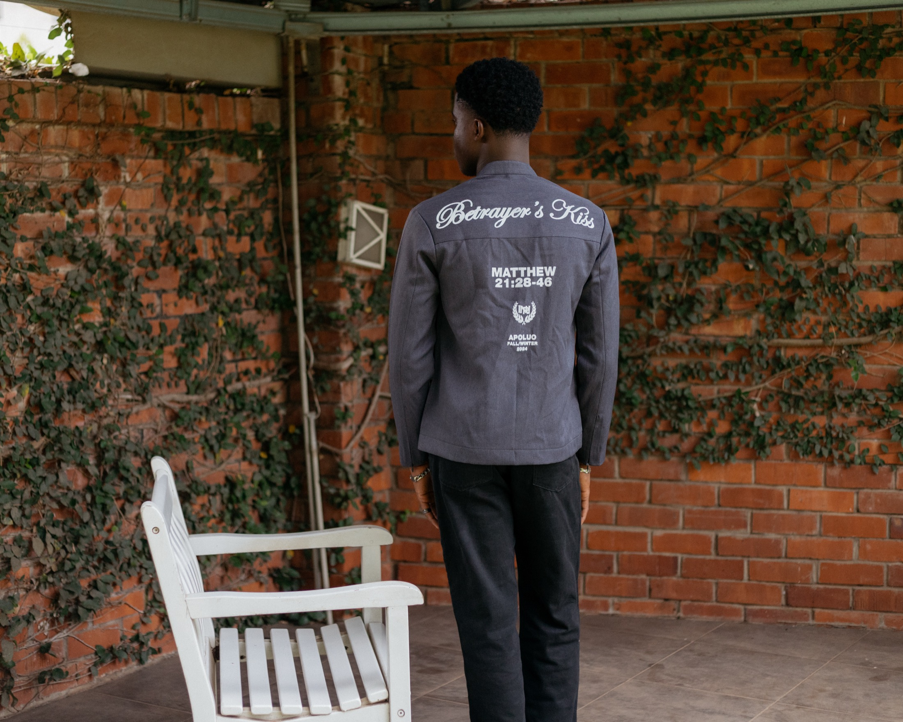

The drop opens
A curated set from one brand, for a fixed window. You reserve with a deposit — half now, half when it ships.
Chariot is the US retailer of record for independent fashion from the cities the American market hasn't reached yet. We hold a short list of brands we know personally, own the inventory here before you order, and ship it from Austin like any store you trust.

We're not a marketplace. We're the retailer of record.
When you buy from Chariot, you buy from Chariot — not from a seller two continents away. We place the wholesale order, import the goods, clear customs, and take responsibility for the piece from the studio in Accra to your door in the States.
That means one price with nothing hidden, domestic shipping and returns, and a real person to email when you need one. The brand makes the clothes. We carry everything else.
Every drop is a community pre-order. Demand is proven before a single piece is cut — so nothing is wasted, and the price stays honest.
A curated set from one brand, for a fixed window. You reserve with a deposit — half now, half when it ships.
The window stays open two weeks. Founding members get in 24 hours before everyone else, every time.
When the window closes, we order from the brand at wholesale — capped at what the community actually reserved.
We absorb freight, customs and duties, warehouse in Austin, and ship to you domestically. Free returns.
Two labels dressing the city's creative class. Their first proper home in the US.

Faith-rooted streetwear by Nana Kwadwo Osei Nyarko, built out of Ashesi University. Heavyweight cotton, quiet detail, six years of range. Drop 0 is their first US drop.

The second label joining the Chariot roster — tailored, considered, unmistakably Accra. More on Jireh as Drop 1 approaches.
Joins at Drop 2"Where did you get that?" Start saying Chariot.